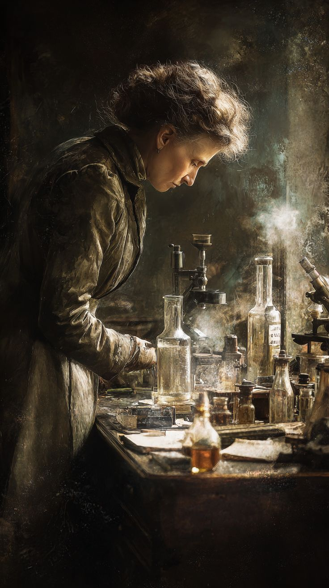
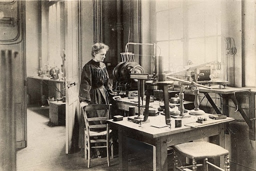

أولاً: بطاقة التعرف والصورة الشخصية

الاسم الكامل: ماري سكلودوفسكا كوري (Marie Curie)
تاريخ الميلاد والوفاة: 1867 - 1934
مجال التميز: الفيزياء والكيمياء
ثانياً: أبرز الأعمال والبحوث العلمية
كرست ماري كوري حياتها لدراسة الإشعاع، ومن أبرز أعمالها:
- تأسيس نظرية النشاط الإشعاعي وصياغة هذا المصطلح علمياً.
- ابتكار تقنيات لفصل النظائر المشعة لعلاج الأورام.
- اكتشاف عنصرين كيميائيين جديدين هما: البولونيوم والراديوم.
- إدارة أولى الدراسات العالمية لعلاج الأورام السرطانية باستخدام النظائر المشعة.

ثالثاً: التحديات والعقبات التي واجهتها
طريق ماري كوري لم يكن مفروشاً بالورود، بل واجهت تحديات قاسية جداً:
- التمييز الأكاديمي: منعت من الالتحاق بالتعليم العالي في بلدها لكونها امرأة، فاضطرت للدراسة السحرية والنزوح لفرنسا.
- الفقر الشديد: عاشت سنوات طويلة في فقر مدقع، وتكسب قوت يومها بصعوبة لتغطية نفقات دراستها في باريس.
- المخاطر الصحية: أصيبت بأمراض جسدية مزمنة وضعف في البصر نتيجة تعرضها المباشر للإشعاعات دون حماية، مما أدى لوفاتها في النهاية.
رابعاً: الإنجازات التاريخية والجوائز
رغم الصعاب، حققت إنجازات جعلت اسمها خالداً في التاريخ البشري:
- أول امرأة تفوز بـ جائزة نوبل في التاريخ.
- الشخص الوحيد (رجل أو امرأة) الذي فاز بجائزتي نوبل في مجالين علميين مختلفين (الفيزياء عام 1903، والكيمياء عام 1911).
- أول امرأة تتبوأ منصب الأستاذية في جامعة باريس العريقة (السوربون).